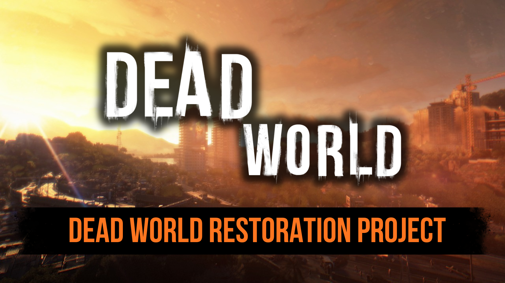
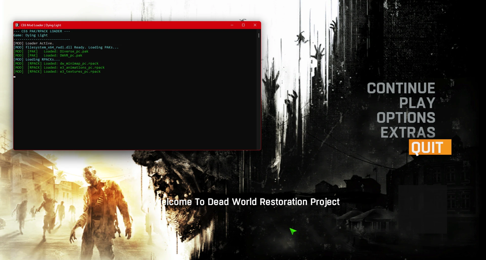
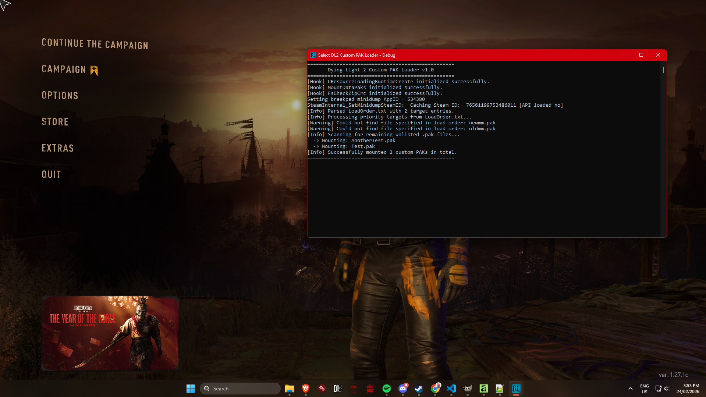

My Tools & Mods
A complete collection of my C++ tools, mod loaders, and desktop applications.

Dying Light Restoration Project
A large mod for dying light with a focus on restoring cut content from the game.
View Code
Chrome Engine 5 Community DevTools
A comprehensive desktop application featuring a Texture Editor, Script Editor, Varlist Editor, and Map Script Editor that works for all games on Chrome Engine 5.
View Code
Dying Light And DI(R)DE Mod Loader
A lightweight PAK & RPACK loader for Dying Light and Dead Island Definitive Edition made in C++.
View Code
Dead Island Discord RPC
A .asi plugin for Dead Island GOTY that adds full discord rich presence.
View Code
Dying Light 2 Custom .pak Loader
A mod loader for Dying Light 2 that can load custom .pak files.
View CodeRP5L Extractor
A extractor for the .rpack file's used in Dead Island and Call Of Juarez The Cartel.
View Code